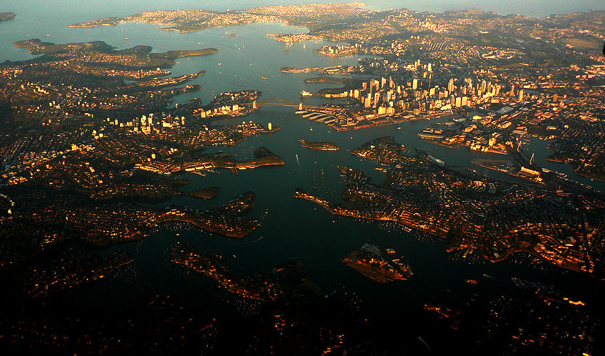

Sydney från luften.
Sedney Befolkningstäthet
Sydneys befolkningstäthet är förhållandevis låg. Orsakerna till det ligger i stadens historia.
Sydney ligger i ett område vars omnejd betraktades som ingenmansland av nybyggarna.
Därför var också priserna på mark i området väldigt låga, vilket gjorde det enklare för stadens invånare att få stora markområden att leva på till väldigt låga priser.
Detta förstärktes än mer av Sydneys utveckling mot att bli en medelklass- och handelsstad där även arbetarklassen tjänade mer än sina europeiska motsvarigheter, långt ut i stadens yttre regioner, medan man i andra städer var tvungen att ha gångavstånd mellan bostadsområdena och arbetsplatserna, vilket hindrade utspridning av invånarna.
Den historiska aspekten och de gångna regeringarnas vilja att sälja ut än mer land i stadens utkanter har lett till en självbild av en stad med låg befolkningstäthet.
Därför finns det idag en ingrodd fientlighet mot tätare boformer hos många av stadens invånare, vilket kommer att bli en stor utmaning i stadens utveckling och växande.